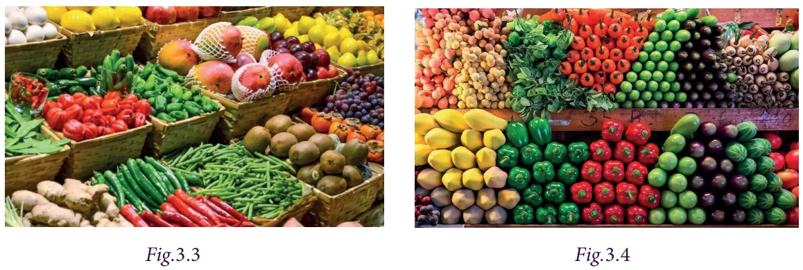

When you visit a market, you can see that, the vegetables and fruits of same kind are kept as separate heaps. Similarly, we can group the same kind of terms in an algebraic expression.

For example, the expression \(7x + 5x + 12x - 16\) has 4 terms but the first three terms have the same variable factor \(x\). We say that \(7x\), \(5x\) and \(12x\) are like terms.
However, the terms \(12x\) and \(-16\) have different variable factors. The term \(12x\) has the variable \(x\) and the term \(-16\) is a constant. Such terms are called unlike terms.
Consider another example. In the expression \(14xy - 7y - 12yx + 5y - 10\), the terms \(-7y\) and \(5y\) are like terms. Also, \(14xy\) and \(-12yx\) are like terms. But, we cannot group the terms \(14xy\), \(7y\) and \(-10\), as they do not have the same variables, thus called unlike terms.
Hence, the terms of an expression having the same variable(s) are called like terms; otherwise, they are called unlike terms. The following activity is helpful in identifying the like terms and unlike terms.
Try this
Identify the like terms among the following and group them: \(7xy, 19x, 1, 5y, x, 3yx, 15, -13y, 6x, 12xy, -5, 16y, -9x, 15xy, 23, 45y, -8y, 23x, -y, 11\).
Note
Terms with the variables \(xy\) and \(yx\) are like terms, because of the commutative property of multiplication \(x \times y = y \times x\). Also, terms obey the commutative property of addition, that is \(x + y = y + x\).
Points to remember while identifying like terms are as follows:
- In each of the term ignore numerical co-efficient.
- Observe the algebraic variables of the terms. They must be the same. (Here the order in which the variables are multiplied should not be considered).